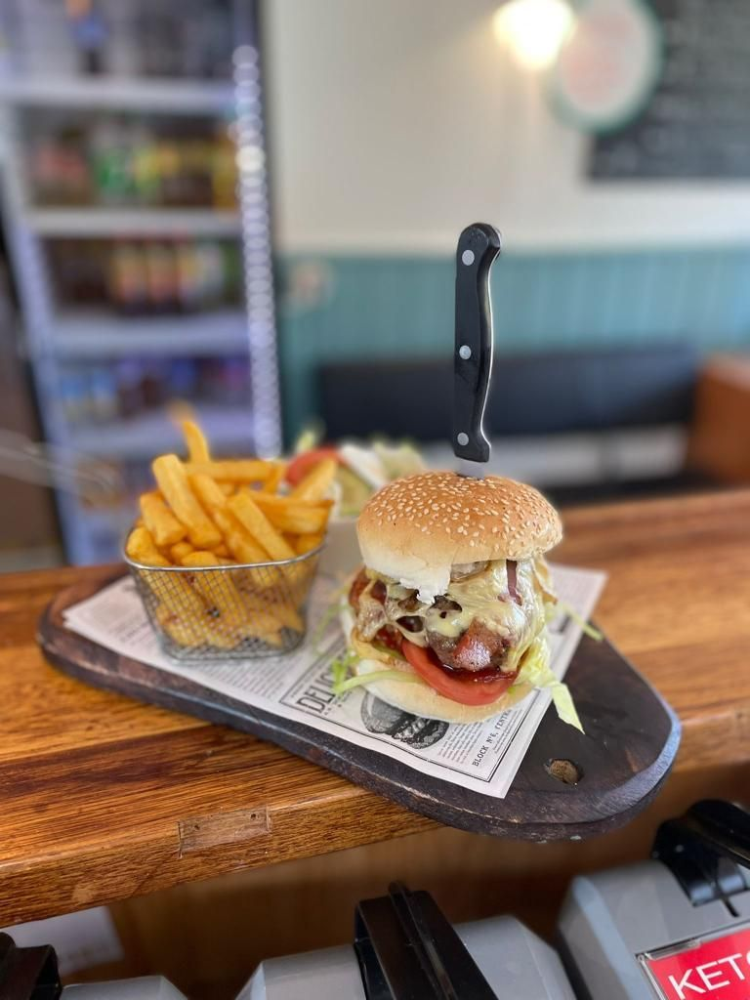
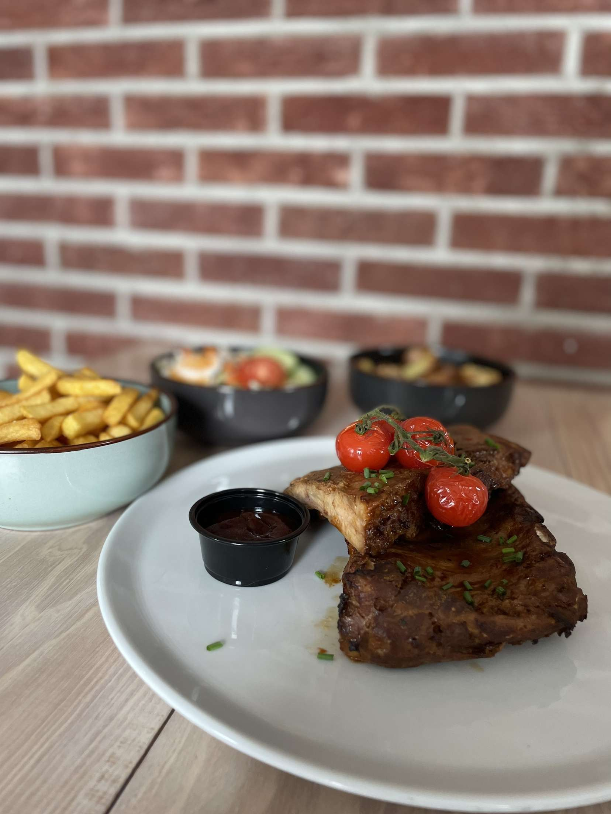
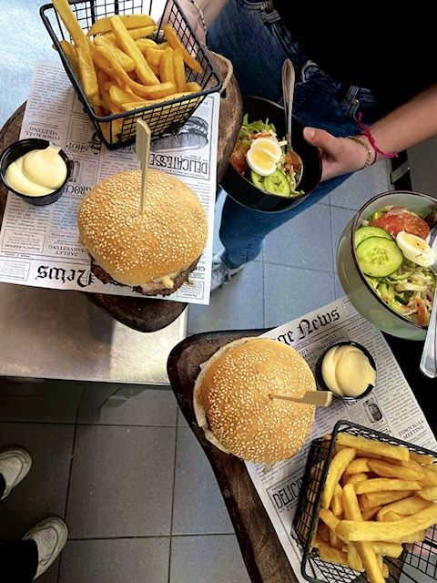

Burgers, plates en pannenkoeken met uitzicht op de molen
Restaurant, terras en snackbar aan de Pheiferbuorren in Anjum. Bij ons schuift iedereen aan.
Elke dag open van 12:00 tot 20:00

Het restaurant en de cafetaria voor iedereen
In ons gezellige restaurant bereiden wij diverse snacks, gerechten, vis en broodjes. Op het terras kijkt u uit op molen De Eendracht: lekker in de zon met een plate, een ijsje of een kop koffie met gebak.
We staan bekend om onze zelfgemaakte hamburgers van 100% rundvlees. Die zijn zeker het proberen waard.
Wij staan voor kwaliteit, klantvriendelijkheid en een goede service. We zien u graag eens langskomen: in het restaurant, op het terras of in de snackbar.
- Restaurantplates, burgers, lunch en pannenkoeken
- Terrasmet uitzicht op molen De Eendracht
- Snackbarsnacks en afhaalmenu's om mee te nemen


Afhaalkaart
Uit de snackbar, om mee naar huis te nemen. Bel even van tevoren, dan staat het klaar: 06 13323340.
Prijzen van de afhaalkaart onder voorbehoud.
Snacks
- Frikandel2,30
- Mammoet frikandel4,00
- Kroket2,30
- Goulashkroket2,50
- Satékroket2,50
- Kwekkeboom kroket2,50
- Kaassoufflé2,50
- Vegetarische loempia3,00
- Vietnamese loempia1,50
- Kiploempia4,50
- Braadworst3,00
- Kipcorn2,50
- Kipsaté6,00
- Halve kip7,50
- Kipkalkoenstick4,00
- Shoarmarol3,50
- Ambachtelijke kipschnitzel6,00
- Mexicano3,00
- Pikanto3,00
- Berehap4,00
- Gehaktbal4,00
- Bamischijf2,50
- Nasischijf2,50
- Huisgemaakt stoofvlees7,00
- Hinnewappers (5 stuks)5,00
- Kipnuggets (8 stuks)4,00
- Bitterballen (8 stuks)4,00
- Kaastengels4,50
- Chickenwings5,00
Afhaalmenu's
- Wienerschnitzel met ui, spek en champignons15,00
- Gehaktbal10,00
- Huisgemaakt stoofvlees14,00
- Hinnewappers11,00
- Kipschnitzel14,00
- Kipsaté13,00
- Halve kip14,00
- Boerenshoarma met ui, paprika, champignons en knoflooksaus14,00
- Kapsalon12,00
- Loempia speciaal12,00
- Kibbeling13,00
- Spareribs19,00
Hamburgers
- Naturel5,00
- Speciaal6,00
- Blackjack6,00
- Cheeseburger7,00
- Baconburger7,00
- Hawaiiburger7,00
- Royaal9,00
Kidsbox 8,00
Kleine patat, kipnuggets, bitterballen of frikandel, drinken en een verrassing.
Koud belegde broodjes
- Gezond met ham, kaas, ei, rauwkost en dressing5,50
- Kipkerrie met sla, ei en komkommer7,00
- Tonijnsalade met sla, ei en ui8,00
- Gerookte zalm met rucola en oestersaus7,00
Warm belegde broodjes
- Beenham met honing-mosterdsaus7,00
- Kipshoarma met sla en knoflooksaus6,50
- Warmvlees met pindasaus6,00
- Pittige kip met sla, komkommer en chilisaus7,00
- Mexicaans met gekruid gehakt, sla, kaas, kidneybonen, maïs en nacho's8,00
- Pulled chicken met sla en BBQ-saus8,00
Sauzen
Mayonaise, fritessaus, curry, ketchup, joppiesaus, pindasaus, speciaal, oorlog, ravigotte en knoflook.
Feestjes en partijen
Op zoek naar een leuke plek voor een groepsdiner met vrienden, familie of collega's? Dan bent u bij ons aan het juiste adres.
We ontvangen u graag in ons restaurant, met plek voor ongeveer 50 personen, of we verzorgen de catering bij u aan huis. Er is veel mogelijk: van hapjes en complete buffetten tot broodjes en plates.
We bespreken graag uw wensen. In overleg is veel mogelijk.
Buffetten en catering
Bij Iterij by de Mûne houden we van gezelligheid en lekker eten. Of je nu een feest, vergadering of gewoon een samenzijn plant: een buffet maakt het makkelijk.
- Jouw wensen
- Laat ons weten wat je in gedachten hebt. We zijn flexibel en passen het buffet helemaal aan jouw smaak aan.
- Vriendelijke prijzen
- Een heerlijke maaltijd hoeft niet duur te zijn.
- Waar jij wilt
- Een buffet op jouw locatie of bij ons in de Iterij: het kan allebei.
Neem gerust contact op voor een praatje over je ideeën en de prijzen.
Openingstijden & contact
Maandag t/m zondag
12:00 – 20:00
| Maandag | 12:00 – 20:00 |
|---|---|
| Dinsdag | 12:00 – 20:00 |
| Woensdag | 12:00 – 20:00 |
| Donderdag | 12:00 – 20:00 |
| Vrijdag | 12:00 – 20:00 |
| Zaterdag | 12:00 – 20:00 |
| Zondag | 12:00 – 20:00 |
Pheiferbuorren 2
9133 MD Anjum Plan uw route